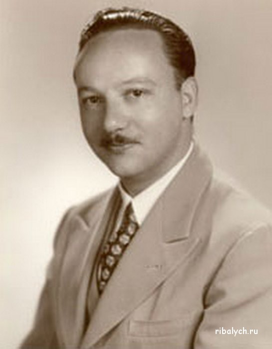
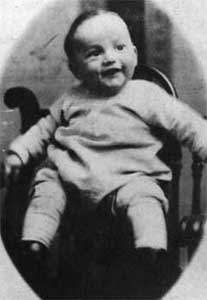
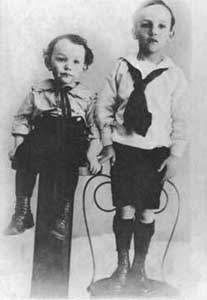
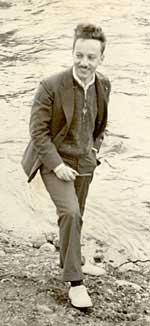
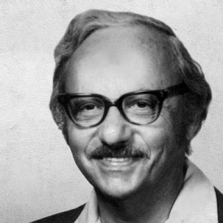
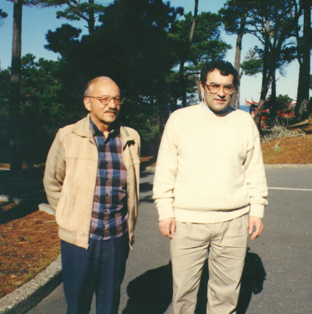

Джордж Бернард Данциг
Доклад Гринь Надежды КН-402

Родители
- Отец - Тобиас Данциг.
- Мать - Ане Уриссон.
- Они познакомились в Сорбонском университете, в скоре поженились и переехали в США в 1910 году.
Детство
- Джордж Бернард Данциг родился в Портленде(США).
- Имя Джордж он получил в честь писателя Джорджа Бернарда Шоу.
- Его брата назвали Анри в честь Анри Пуанкаре.


Первый интерес к математике
- Отец Джорджа был математиком.
- Джордж был в восторге от геометрия, когда учился в школе.
- Помогал отцу в написании книги Number: language of science.
Образование
- В университе Мэриленда получил степень бакалавра в 1936 году
- Начинает учиться в Мичиганском Университете, но решает бросить аспирантуру
и уезжает в Вашингтон работать статистом.
- Поступил на докторскую программу в области математике в Калифонийский университет в Беркли.

Опаздывать иногда полезно
Вторая мировая война
- Берет отпуск от докторской программы и приступает
к работе в Учреждении статистического управления ВВС США.
-
Возвращается в Беркли на один семестр и защищает свою докторскую по математике.
- Беркли предлагает ему академическую должность, но он отказывается.
Тот самый алгоритм.
В июне 1946 году его коллега из Пентагона предлагает ему работу по поиску алгоритма, позволяющего механизировать процесс планирования. Он соглашается и его назначают математическим советником в Министерстве обороны для выполнения задачи.
Симплекс-метод
В 1947 году Данциг разработал всем известный симплекс-метод.
Дальнейшая жизнь Джорджа Данцига
- C 1952 работает в RAND.
- В 1960 году становится профессором факультета промышленной
инженерии Калифорнийского университета в Беркли

Дальнейшая жизнь Джорджа Данцига
- В 1966 году он перешел в Стэндфордский университет.
- В 1973 году Данциг основал лабораторию оптимизации систем.
- Возглавил методологическую группу Международного института прикладного системного анализа (МИПС).
Поздние годы
Активно занимался научной работой даже после выхода на пенсию, преподавал в унверситете до 1996 года,
готовил к публикации 4-ех томное издание по линейному программированию.

Награды
- лауреат Теоретической премии фон Неймана (1974)
- получил национальную научную медаль США (1975)
- почётный доктор Мэрилендского университета в Колледж-Парке (1976)
- В 1985 году в Израиле удостоен премии Харви.
Книги
Dantzig G. B. and Thapa M. N. Linear programming. — Springer-Verlag, 1997. — Vol. 1. Introduction.
Dantzig G. B. and Thapa M. N. Linear programming. — Springer-Verlag, 2003. — Vol. 2. Theory and Extensions.